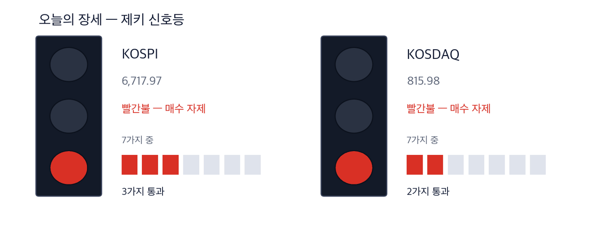
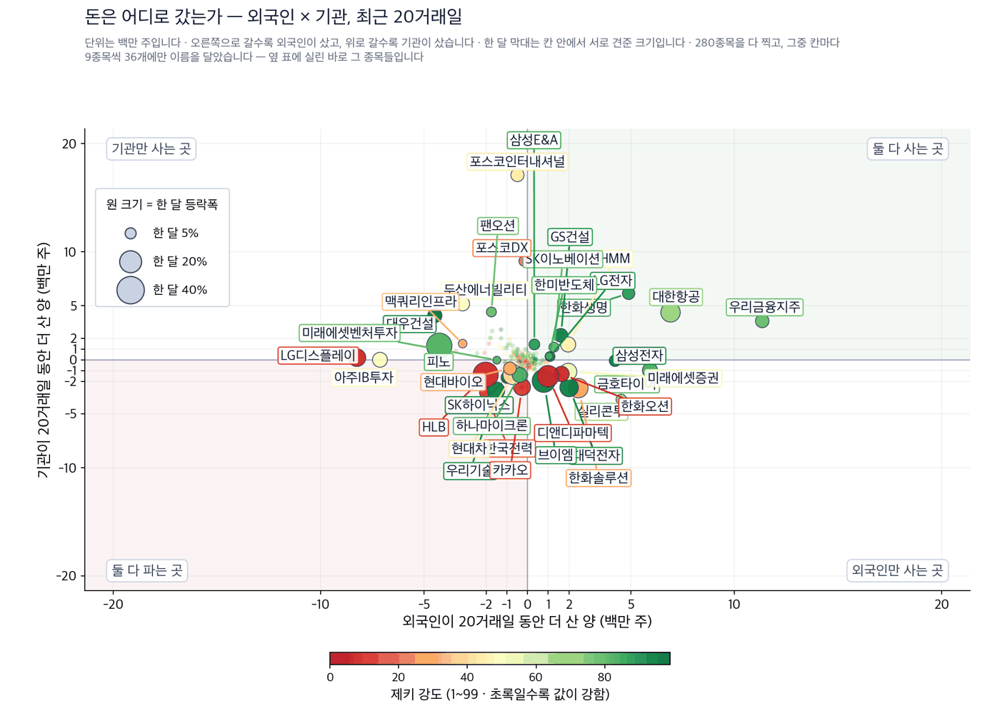
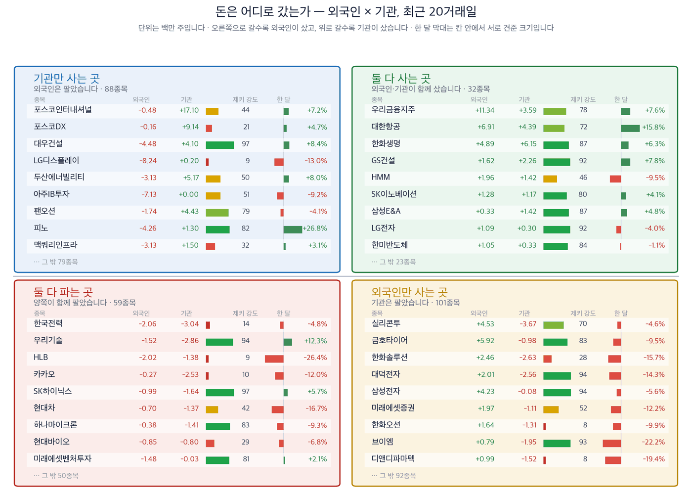

연준이 3년 2개월 만에 금리를 올렸습니다 — 인상 사유는 중동입니다
2026년 9월 17일 · 모든 값은 9월 16일 종가 기준입니다
코스피 6,717.97 (+1.37%) | 코스닥 815.98 (+0.44%) | 다우 51,462.55 (−1.21%) | 미국 기준금리 3.75~4.00% | 제키 신호등 빨간불 |

이 그림 읽는 법
| 켜진 등 | 오늘의 국면입니다. 초록은 매수 우위, 노랑은 관망, 빨강은 매수 자제입니다. |
| 채워진 칸 | 7가지 조건 중 몇 개를 통과했는지입니다. 칸이 많이 찰수록 시장 구조가 튼튼합니다. |
| 칸이 다 찼는데 노랑·빨강이면 | 다른 이유로 한 단계 낮춘 것입니다. 그림 아래에 그 이유를 적었습니다. |
제키 신호등은 저희가 시장 국면을 7가지로 재서 하나로 줄인 것입니다. 초록불은 사기 좋은 국면, 노란불은 관망, 빨간불은 매수 자제입니다. 오늘 코스피와 코스닥이 모두 빨간불입니다.
- 연준이 9월 16일 기준금리를 0.25%포인트 올렸습니다. 2023년 7월 이후 처음이고 표결은 만장일치였습니다. 성명은 인상 사유로 지정학에서 온 불확실성을 들었습니다. 7개월째인 미국과 이란의 전쟁, 그리고 그 전쟁이 밀어 올린 에너지 값입니다. 점도표 중간값은 올해 한 번 더 올린다는 쪽입니다.
- 같은 뿌리에서 서울 지면은 방산·정유·건설을 수혜 업종으로 꼽았습니다. 9월 16일 종가로 보면 셋 가운데 둘만 주가가 따라왔습니다. 정유는 저희 업종 순위 46개 가운데 2위, 건설은 4위입니다. 방산은 33위이고 일주일 새 8계단 내려갔습니다. 그래서 오늘 방산은 종목으로 만들지 않았습니다.
- 근거가 가장 많이 쌓인 곳은 중동이 아니라 전력망이었습니다. 데이터센터가 못 구하는 것은 발전기가 아니라 변압기와 전선입니다. 가온전선은 한 달 동안 52.0% 올랐고, 외국인과 기관이 함께 사들였습니다. 저희 기준 4가지를 모두 채운 종목은 오늘 이 하나뿐입니다.
그래서 어떻게 하나: 서울 개장 뒤 30분 동안 전력기기와 정유가 간밤 뉴욕의 하락을 얼마나 따라가는지 보시면 됩니다. 금리를 올린 날 함께 내리는 것은 보통이고, 거기서 갈라지는 종목이 오늘의 이야기입니다.
먼저, 이번 주 경제
이번 주 숫자 하나만 기억하신다면 미국 10년물 국채금리입니다. 5.01%로 19년 만에 가장 높습니다. 금리를 올리는데 장기 금리까지 오르면, 물가를 잡겠다는 약속이 아직 덜 믿긴다는 뜻입니다. 원/달러 환율이 1,378.38원까지 오른 것도 같은 자리에서 나왔습니다.
| 날짜 | 무엇을 보는가 | 넘으면 어떻게 되는가 |
|---|
| 9월 17일 서울 개장 | 간밤 뉴욕 하락을 얼마나 따라가는가 | 다우가 −1.21% 내렸습니다. 코스피가 그 폭의 절반도 따라가지 않으면 국내 수급이 버틴 것입니다 |
| 9월 18일 | 한·미 양해각서 서명 예정일 | 서명이 미뤄지면 원전 관련주가 한 번 더 흔들립니다 |
| 9월 22일 | 대미투자 국회 보고 | 웨스팅하우스 지분이 10% 아래로 정해지면 원전 쪽 기대가 줄어듭니다 |
| 9월 21일 | 블룸에너지가 S&P500 지수에 들어가는 날 | 그 뒤에도 주문이 이어지면 국내 납품사의 이야기가 유지됩니다 |
테마 1 · 전력망 — 병목은 발전이 아니라 계통입니다
미국 전력망은 발전 용량만 모자란 것이 아닙니다. 변압기와 송전선이 낡았고, 계통에 연결하는 심사에 평균 5년이 걸립니다. 그래서 가스관만 있으면 넉 달 안에 세울 수 있는 연료전지가 대안으로 떠올랐습니다. 9월 16일 서울에서도 그 공급망에 속한 종목이 함께 올랐습니다. 아래 3종목은 거래가 두껍고 주가가 이미 움직인 종목입니다.
| 가온전선 (000500) | 근거 확실 |
| 종가 247,000원 · 9월 16일 +0.41% · 한 달 +52.0% · 석 달 +30.4% · 제키 강도 99 · 52주 고점 대비 −21.2% · 하루 거래대금 726억원 |
누가 전선을 만드는 회사가 · 무엇을 초고압 전력망 교체 수요를 · 언제 9월 16일 종가까지
어디서 미국과 국내 전력망 공사에서 · 왜 데이터센터가 늘수록 송전선이 먼저 모자라서
어떻게 주문이 매출로 바뀌는 데 시간이 걸리지 않는 품목이라 실적에 먼저 옵니다.
확인 신호 — 9월 2일 종가 201,000원이 2주 상승이 시작된 자리입니다. 그 위에서 이번 주를 마치면 추세가 살아 있습니다.
철회 기준 — 9월 2일 그 자리를 밑돌아 마치면 근거가 사라집니다. 외국인과 기관 가운데 한쪽이 20거래일 기준 순매도로 돌아서도 같습니다.
| LS ELECTRIC (010120) | 확인 필요 |
| 종가 199,000원 · 9월 16일 +1.17% · 한 달 −4.8% · 석 달 −22.0% · 제키 강도 93 · 52주 고점 대비 −37.5% · 하루 거래대금 838억원 |
누가 전력기기 회사가 · 무엇을 미국 하이퍼스케일러의 변압기 주문을 · 언제 9월 16일까지
어디서 북미 데이터센터 현장에서 · 왜 초고압 변압기를 만들 수 있는 회사가 세계에 몇 곳뿐이라
어떻게 납기가 길어 계약 한 건이 여러 해의 매출로 나뉘어 들어옵니다.
확인 신호 — 20일 이동평균 201,360원을 되찾으면 한 달 하락이 멈춘 것입니다.
철회 기준 — 9월 2일 종가 195,700원 아래에서 이번 주를 마치면 외국인 순매수만 남고 값은 따라오지 않은 것입니다.
| 산일전기 (062040) | 확인 필요 |
| 종가 195,800원 · 9월 16일 +3.27% · 한 달 +9.3% · 석 달 −22.0% · 제키 강도 79 · 52주 고점 대비 −41.3% · 하루 거래대금 660억원 |
누가 변압기 회사가 · 무엇을 북미 교체 수요를 · 언제 9월 16일까지
어디서 미국 송배전 시장에서 · 왜 노후 변압기를 한꺼번에 갈아야 하는 시기가 겹쳐서
어떻게 수주 잔고가 쌓이면 이듬해 매출로 순서대로 넘어옵니다.
확인 신호 — 20일 이동평균 189,915원 위를 지키면 기관 순매수가 값으로 이어진 것입니다.
철회 기준 — 9월 2일 종가 183,800원을 밑돌아 마치면 2주 상승이 지워집니다. 제키 강도가 70 아래로 내려가도 후보에서 뺍니다.
테마 2 · 8인치 파운드리 — 낡았다던 라인이 모자랍니다
앞선 파운드리들이 12인치 첨단 공정으로 옮겨가면서 8인치 라인을 줄였습니다. 그런데 전력 반도체와 센서는 8인치에서 만듭니다. 데이터센터와 로봇이 늘수록 그 수요가 늘어납니다. 시장조사업체 트렌드포스는 올해 세계 8인치 생산능력이 전년보다 2.4% 줄어든다고 봤습니다. 공급이 줄고 수요가 느는 구간이 겹쳤습니다.
| DB하이텍 (000990) | 근거 있음 |
| 종가 126,200원 · 9월 16일 +5.34% · 한 달 +29.3% · 석 달 −20.4% · 제키 강도 91 · 52주 고점 대비 −42.8% · 하루 거래대금 1000억원 |
누가 국내 파운드리 회사가 · 무엇을 8인치 공급 부족을 · 언제 9월 한 달 동안
어디서 국내 8인치 생산라인에서 · 왜 앞선 회사들이 8인치를 줄여 갈 곳이 좁아져서
어떻게 가동률이 올라가면 고정비가 그대로라 이익이 먼저 늘어납니다.
확인 신호 — 9월 2일 종가 89,200원에서 시작된 상승입니다. 20일 이동평균 99,915원 위를 지키는 동안은 기관이 들고 있는 것입니다.
철회 기준 — 외국인과 기관이 갈라져 있습니다. 기관 순매수가 20거래일 기준으로 양수로 돌아서지 않으면 한 쪽 매수에 기댄 상승입니다.
테마 3 · 중동 공백 — 미국이 못 대는 것을 한국이 댑니다
iM증권은 9월 16일 보고서에서 전쟁 이후 수혜 업종으로 방산·정유·건설을 꼽았습니다. 미국이 요격미사일 재고를 크게 소진했고, 전쟁 이전 수준을 되찾는 시점을 2029년으로 봤습니다. 정제설비 피해가 길어져 정제마진도 넓어졌습니다. 그리고 전후 에너지 인프라 투자가 늘면 시공 경험이 있는 국내 건설사에 수주 기회가 옵니다. 저희는 이 가운데 값과 수급이 함께 받쳐 준 두 종목만 실었습니다.
| 삼성E&A (028050) | 근거 있음 |
| 종가 50,200원 · 9월 16일 −1.76% · 한 달 +4.8% · 석 달 −4.4% · 제키 강도 87 · 52주 고점 대비 −22.0% · 하루 거래대금 779억원 |
누가 플랜트 회사가 · 무엇을 중동과 미국의 에너지 설비 공사를 · 언제 9월 16일까지
어디서 사우디아라비아와 미국 텍사스에서 · 왜 전쟁으로 망가진 설비를 다시 짓고 가스발전을 늘려야 해서
어떻게 수주가 잡히면 공사 기간에 걸쳐 매출로 나뉘어 들어옵니다.
확인 신호 — 외국인과 기관이 20거래일 동안 함께 사들였습니다. 20일 이동평균 48,017원 위를 지키면 그 매수가 유지되는 것입니다.
철회 기준 — 9월 2일 종가 43,700원 아래로 내려가면 2주 상승이 통째로 지워집니다. 제키 강도도 87로 아직 90 위가 아닙니다.
| 대우건설 (047040) | 근거 있음 |
| 종가 18,610원 · 9월 16일 −3.67% · 한 달 +8.4% · 석 달 −25.0% · 제키 강도 97 · 52주 고점 대비 −49.9% · 하루 거래대금 1771억원 |
누가 건설사가 · 무엇을 대미 가스복합화력 공사 참여 가능성을 · 언제 9월 16일까지
어디서 미국 텍사스 엔시날 사업에서 · 왜 30조원 규모 사업이 대미 투자 1호로 거론되고 있어서
어떻게 참여가 확정되면 해외 수주 잔고가 한 번에 늘어납니다.
확인 신호 — 9월 22일 국회 보고에서 사업자가 확정되면 그날 거래량으로 확인됩니다. 20일 이동평균 18,172원 위를 지키는 것도 같습니다.
철회 기준 — 기관 순매수까지 20거래일 기준으로 음수가 되면 오른 것을 설명할 자금이 없습니다. 외국인은 이미 팔고 있습니다.
오늘 제외한 테마 2가지
방산은 기사가 가장 크게 다룬 곳입니다. 미국이 요격미사일을 다시 채우는 데 여러 해가 걸리고, 그 사이 한국산이 대체 공급처가 된다는 이야기입니다. 이야기는 맞습니다. 그런데 주가가 따라오지 않았습니다. LIG디펜스앤에어로스페이스는 한 달 동안 16.0% 내렸고 50일 이동평균 718,760원 아래에 있습니다. 제키 강도는 2주 전 79에서 66으로 떨어졌습니다. 업종으로 봐도 46개 가운데 33위이고 일주일 새 8계단 내려갔습니다. 원전도 같습니다. 대미투자 국회 보고가 22일로 미뤄지자 한전기술이 하루에 9.38% 내렸습니다. 한 달로는 39.2% 오른 자리라 되돌릴 폭이 남아 있습니다. 두 테마는 오늘 종목으로 만들지 않습니다.
제외 방산과 원전은 오늘 후보에서 뺍니다.
오늘 찾은 것, 한 장으로
| 테마 | 종목 | 제키 강도 | 근거의 무게 |
|---|
| 전력망 | 가온전선 (000500) | 99 | 근거 확실 |
| 전력망 | LS ELECTRIC (010120) | 93 | 확인 필요 |
| 전력망 | 산일전기 (062040) | 79 | 확인 필요 |
| 8인치 파운드리 | DB하이텍 (000990) | 91 | 근거 있음 |
| 중동 공백 | 삼성E&A (028050) | 87 | 근거 있음 |
| 중동 공백 | 대우건설 (047040) | 97 | 근거 있음 |
| 방산 (제외) | LIG디펜스앤에어로스페이스 (079550) | 66 | 확인 필요 |
| 원전 (제외) | 한전기술 (052690) | 70 | 확인 필요 |
근거의 무게 — 4가지를 세었습니다
①한 달 동안 값이 올랐는가 ②제키 강도가 90을 넘는가 ③외국인이 20거래일 동안 순매수했는가 ④기관이 같은 기간 순매수했는가. 충족한 수가 딱지를 정합니다. 사람이 따로 고르지 않습니다. 수급 두 칸의 기준일은 9월 9일입니다.
| 종목 | ①값이
올랐나 | ②강도
90↑ | ③외국인
순매수 | ④기관
순매수 | 충족 | 근거의 무게 |
|---|
| 가온전선 (000500) | O | O | O | O | 4/4 | 근거 확실 |
| LS ELECTRIC (010120) | X | O | O | X | 2/4 | 확인 필요 |
| 산일전기 (062040) | O | X | X | O | 2/4 | 확인 필요 |
| DB하이텍 (000990) | O | O | O | X | 3/4 | 근거 있음 |
| 삼성E&A (028050) | O | X | O | O | 3/4 | 근거 있음 |
| 대우건설 (047040) | O | O | X | O | 3/4 | 근거 있음 |
| LIG디펜스앤에어로스페이스 (079550) | X | X | O | X | 1/4 | 확인 필요 |
| 한전기술 (052690) | O | X | X | O | 2/4 | 확인 필요 |
기관과 외국인은 어디로 갔나

이 그림 읽는 법
| 점 하나 | 종목 하나입니다. 가로·세로 위치가 두 값을 그대로 나타내고, 가운데 가로·세로로 그어진 두 선이 기준선입니다. 네 귀퉁이의 이름표가 그 칸의 뜻입니다. |
| 점 크기 | 최근 한 달 등락폭입니다. 오르든 내리든 크게 움직였으면 큰 점입니다. |
| 점 색 | 제키 강도입니다. 초록일수록 주가가 시장에서 강합니다. |
| 30종목만 | 이름이 겹치면 못 읽기 때문입니다. 가운데 몰린 나머지는 움직임이 거의 없는 종목들이라 뺐습니다. |

이 그림 읽는 법
| 네 칸 | 가로와 세로 두 값이 각각 기준선을 넘었는지로 넷을 가릅니다. 오른쪽 위는 둘 다 넘은 곳, 왼쪽 아래는 둘 다 못 넘은 곳, 나머지 두 칸은 한쪽만 넘은 곳입니다. 칸 이름이 그 칸에 든 종목의 상태를 한 문장으로 적어 둔 것입니다. |
| 가운데 두 칸 | 두 기간을 견주는 자리입니다. 글자 A~E가 있으면 이 업계가 쓰는 표준 등급으로, A는 강한 매수, B는 매수 우세, C는 매수와 매도가 반반, D는 매도 우세, E는 강한 매도를 뜻합니다(전체를 다섯으로 나눈 순위라 A가 상위 20%입니다). 숫자가 있으면 그 기간에 산 양에서 판 양을 뺀 것입니다. |
| 칸마다 9종목 | 그 칸에서 움직임이 가장 큰 순서입니다. 나머지는 칸 아래에 몇 종목인지만 적었습니다. 옆 산점도가 이름을 다는 종목이 바로 이 9종목씩입니다. |
| 한 달 막대 | 0을 가운데 두고 오른쪽이 상승, 왼쪽이 하락입니다. 길이는 같은 칸 안에서만 서로 견주십시오 — 칸마다 기준이 다릅니다. |
| 제키 강도 | 1~99 순위입니다. 막대가 길수록, 초록에 가까울수록 그 종목의 주가가 시장에서 강합니다. |
저희가 보는 외국인·기관 매매 자료의 284종목을 하나도 빠짐없이 확인했습니다. 하루 평균 거래대금 30억원 미만은 뺐습니다 — 사고팔 때 제값을 못 받기 때문입니다.
자료의 한계를 먼저 밝힙니다. 종목마다 마지막 기록일이 다르고, 어느 것도 오늘까지 오지 않았습니다. 표 오른쪽 끝에 종목별 기준일을 적었습니다.
외국인이 가장 많이 산 5종목
| 종목 | 20일 동안 더 산 양(주) | 제키 강도 | 한 달 등락 | 기준일 |
|---|
| 우리금융지주 316140 | +11,338,438 | 78 | +7.6% | 09-09 |
| 대한항공 003490 | +6,908,785 | 72 | +15.8% | 09-09 |
| 금호타이어 073240 | +5,916,691 | 83 | -9.5% | 09-09 |
| 한화생명 088350 | +4,886,060 | 87 | +6.3% | 09-09 |
| 실리콘투 257720 | +4,530,158 | 70 | -4.6% | 09-09 |
외국인이 가장 많이 판 5종목
| 종목 | 20일 동안 더 산 양(주) | 제키 강도 | 한 달 등락 | 기준일 |
|---|
| LG디스플레이 034220 | -8,239,713 | 9 | -13.0% | 09-09 |
| 아주IB투자 027360 | -7,125,717 | 51 | -9.2% | 09-09 |
| 대우건설 047040 | -4,475,914 | 97 | +8.4% | 09-09 |
| 피노 033790 | -4,260,883 | 82 | +26.8% | 09-09 |
| 와이씨 232140 | -3,469,381 | 23 | +11.5% | 09-09 |
기관이 가장 많이 산 5종목
| 종목 | 20일 동안 더 산 양(주) | 제키 강도 | 한 달 등락 | 기준일 |
|---|
| 포스코인터내셔널 047050 | +17,099,281 | 44 | +7.2% | 09-09 |
| 포스코DX 022100 | +9,143,282 | 21 | +4.7% | 09-09 |
| 한화생명 088350 | +6,147,840 | 87 | +6.3% | 09-09 |
| 두산에너빌리티 034020 | +5,167,690 | 50 | +8.0% | 09-09 |
| 팬오션 028670 | +4,427,162 | 79 | -4.1% | 09-09 |
기관이 가장 많이 판 5종목
| 종목 | 20일 동안 더 산 양(주) | 제키 강도 | 한 달 등락 | 기준일 |
|---|
| 실리콘투 257720 | -3,673,312 | 70 | -4.6% | 09-09 |
| 한국전력 015760 | -3,037,380 | 14 | -4.8% | 09-09 |
| 우리기술 032820 | -2,855,185 | 94 | +12.3% | 09-09 |
| 한화솔루션 009830 | -2,626,525 | 28 | -15.7% | 09-09 |
| 대덕전자 353200 | -2,561,847 | 94 | -14.3% | 09-09 |
양쪽이 다 산 종목 — 한화생명입니다. 한쪽만 사는 경우는 흔하지만 양쪽이 같이 사는 경우는 드뭅니다.
정면으로 엇갈린 종목 — 실리콘투는 외국인 +4,530,158주, 기관 -3,673,312주로 서로 반대편에 섰습니다. 한 달 주가는 -4.6%입니다. 한쪽이 크게 틀린 자리이므로 값이 크게 움직입니다.
찾아낸 종목에 자금이 따라왔는가
기사와 값이 맞아떨어져도 자금은 따로 봅니다. 아래는 위에서 고른 종목만 모은 것이고, 단위는 주식 수입니다. 기준일은 9월 9일이며 그 뒤 닷새치는 아직 공시로 들어오지 않았습니다.
| 종목 | 외국인 20거래일 | 기관 20거래일 | 9월 16일 등락 |
|---|
| 가온전선 (000500) | +256,748 | +363,589 | +0.41% |
| LS ELECTRIC (010120) | +629,386 | -312,777 | +1.17% |
| 산일전기 (062040) | -322,095 | +325,878 | +3.27% |
| DB하이텍 (000990) | +47,015 | -207,383 | +5.34% |
| 삼성E&A (028050) | +332,085 | +1,419,095 | −1.76% |
| 대우건설 (047040) | -4,475,914 | +4,096,763 | −3.67% |
| LIG디펜스앤에어로스페이스 (079550) | +115,723 | -206,442 | — |
| 한전기술 (052690) | -733,497 | +218,633 | −9.38% |
실린 종목은 어떻게 됐나
09/10부터 실린 36종목 가운데 5거래일이 지난 0종목. 기준은 실린 날 종가, 비교는 같은 기간 KOSPI.
무엇인가. 저희가 신문 기사에서 찾아 이 다이제스트에 이름을 올린 회사들을 그날 종가로 적어 두고, 그 뒤 값이 어떻게 됐는지 세는 표입니다. 근거가 굳은 정도에 따라 나눠 셉니다.
무엇을 위한 것인가. 기사에서 고른 종목이 실제로 값을 하는지 숫자로 남기기 위해서입니다. 이름을 올린 날 그대로 적으므로, 좋았던 것만 나중에 골라낼 수 없습니다.
아닌 것. 추천이 아니고, 저희가 산 종목도 아니며, 아직 판정도 아닙니다. 판정은 두 시장 합쳐 60건이 찼을 때 미리 정해 둔 검정으로 한 번만 합니다.
| 근거의 무게 | 종목 | 오름 | 내림 | KOSPI보다
나음 | 평균 초과 |
|---|
| 아직 5거래일이 지난 종목이 없습니다. 실린 36종목은 기록되어 있고, 날이 차는 대로 여기에 셉니다. |
지금 72건이 모였습니다. 그 전에는 오르고 내린 수만 셉니다. 아직 5거래일이 안 된 종목 36건은 빠져 있습니다. 모의 집계이며 거래비용을 빼지 않았습니다.
장중 체크리스트 — 이번 주에 확인할 것
- 개장 30분 — 가온전선이 9월 2일 종가 201,000원 위에서 버티는지 봅니다. 그 아래로 내려가면 한 달 상승분의 절반이 지워집니다.
- 개장 30분 — 외국인 선물 순매수가 양수로 출발하는지 봅니다. 금리를 올린 다음 날 외국인이 사면 원화 자산이 버틴 것입니다.
- 마감 30분 — DB하이텍의 거래량이 50일 평균을 넘긴 채로 끝나는지 봅니다. 기관이 사들인 자리가 유지되는지가 거기서 보입니다.
출처: 한국경제 9월 17일자, iM증권 산업 재편 보고서, 한국투자증권, DS투자증권, 트렌드포스, 연방공개시장위원회 9월 성명과 경제전망. 값은 저희가 9월 16일 종가로 직접 계산했습니다.
이 다이제스트는 저희가 계산한 값으로 걸러낸 종목을 싣습니다. 개별 투자 자문이 아니며 특정 종목의 매수나 매도를 권하지 않습니다. 실린 등급과 순위는 모두 저희가 계산한 것이고, 모의 포트폴리오 기준입니다. 투자에는 원금 손실 위험이 따릅니다.
본 리포트는 정보 제공 목적이며 개별 투자 자문이 아닙니다. ZekiRex™ Apex KR는 10억 원 규모의 모의 포트폴리오를 규칙 기반으로 운용합니다. 실제 계좌도, 주문도, 사고판 일도 없습니다. 표시된 성과에는 수수료와 세금, 매매 시 가격 미끄러짐이 반영되지 않았습니다. 종목 자료에는 상장폐지된 회사가 빠져 있습니다. 그래서 성과가 실제보다 높게 나오는 치우침(생존편향)이 있습니다. 과거의 성과는 미래를 보장하지 않으며, 투자에는 원금 손실 위험이 따릅니다.
This is the Rex Way, ZekiRex™